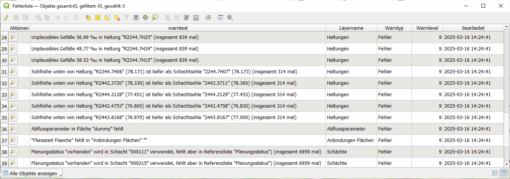
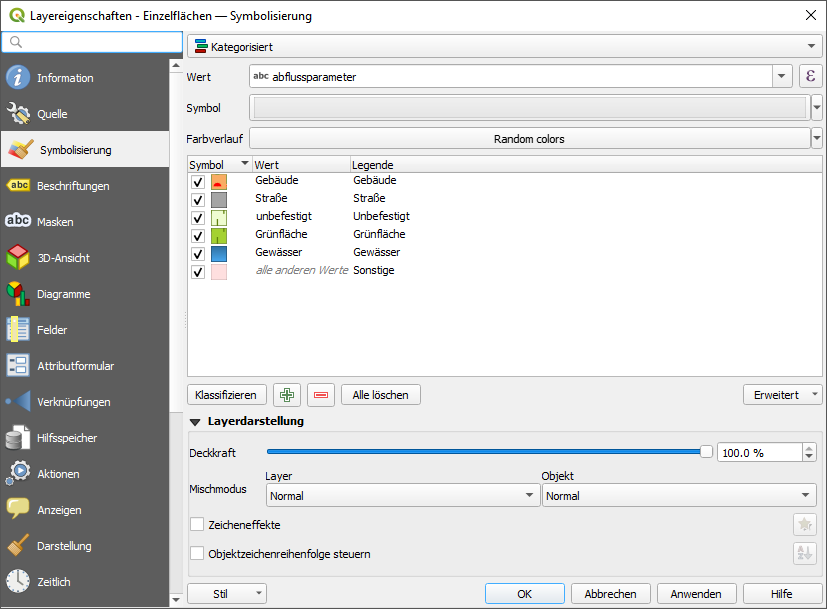

Daten
Plausibilitätsprüfung
Mit der Funktion  Plausibilitätsprüfung können die verschiedenen
Plausibilitätsprüfungen, welche unter der gleichnamigen Tabelle zu finden sind, bequem ausgeführt werden.
Die zur Auswahl stehenden Themen entsprechen dabei den Gruppen aus der Tabelle „Plausibilitätsprüfungen“. In
dieser Tabelle sind die einzelnen Plausibilitätsprüfungen, mit Beschreibung sowie der genauen SQL-Abfrage, zu
finden.
Plausibilitätsprüfung können die verschiedenen
Plausibilitätsprüfungen, welche unter der gleichnamigen Tabelle zu finden sind, bequem ausgeführt werden.
Die zur Auswahl stehenden Themen entsprechen dabei den Gruppen aus der Tabelle „Plausibilitätsprüfungen“. In
dieser Tabelle sind die einzelnen Plausibilitätsprüfungen, mit Beschreibung sowie der genauen SQL-Abfrage, zu
finden.


Zur Durchführung können eine oder mehrere Themen ausgewählt und die entsprechenden SQL-Abfragen ausgeführt werden. Nach Durchführung der Plausibilitätsprüfung öffnet sich die Tabelle „Fehlerliste“ automatisch.

Hier werden die gefundenen Fehler aufgeführt und durch Klick auf das Symbol in der ersten Spalte „Aktionen“ kann das fehlerhafte Objekt in der Karte markiert und die Karte auf dieses Objekt gezoomt werden.
Durch die Option „Ergebnisse zu bestehenden hinzufügen“ wird die vorhandene Fehlerliste nicht überschrieben, sondern ergänzt. Die Option „Fehlerliste auf 5 Meldungen je Fehlertyp beschränken“ bewirkt, dass für jeden Fehlertyp maximal 5 Fälle aufgelistet werden, um einen besseren Überblick über die verschiedenen Fehlertypen zu ermöglichen. Am Ende jeder Warnung ist die Gesamtzahl je Fehlertyp aufgeführt.
Die Liste der Plausibilitätsprüfungen kann durch den Anwender ergänzt werden. Dazu muss in der Spalte „sql“ eine SQL-Abfrage eingetragen werden, die zwei Spalten liefert: - objid: Bezeichnung, anhand derer die aufzulistenden Objekte identifiziert werden können. - bemerkung: Beschreibung des Fehlers, gegebenenfalls mit zusätzlichen Informationen (z. B. fehlerhafte Länge)
Die in der Spalte „Gruppe“ eingetragende Bezeichnung erscheint in der Themenauswahl des Formulars „Plausibilitätsprüfungen“. Wichtig ist zu beachten, dass die von QKan vorgegebenen Datenprüfungen bei Updates automatisch geändert werden können. Um selbst ergänzte Plausibilitätsprüfungen davon auszunehmen reicht es aus, in der Spalte „Gruppe“ eine andere als die vorgegebenen Bezeichnungen zu verwenden, z. B. „Netzstruktur, ergänzt“, da nur die von QKan vorgegebenen Standardgruppen (z. B. „Geoobjekte“, „HYSTEM-EXTRAN“, „Netzstruktur“) von den Aktualisierungen betroffen sind (siehe auch Abbildung oben: „Plausibilitätsprüfungen“).
Automatische Übernahme von Haltungsdaten aus Schächten
QKan bietet die Möglichkeit, bei der Neuerstellung oder Bearbeitung von Haltungen im Lageplan Schachtbezeichnungen und/oder Sohlhöhen automatisch zu übernehmen, wenn ein Ende auf einen Schacht fängt. Bei den Sohlhöhen geschieht dies nur, wenn das Feld vorher leer (NULL) ist.
Die Funktion kann über das Menü QKan > Allgemein > Optionen in der Karteikarte Autom. Datenübernahme aktiviert werden.
Voraussetzung ist weiterhin, dass die QGIS-Fangfunktion aktiviert ist.
Referenztabellen
Diese Tabellen dienen im wesentlichen dazu, einheitliche Bezeichnungen für Attribute zu verwenden, wie z. B. Profile, („Kreis“, oder „Kreisprofil“).
In QKan müssen die Bezeichnungen in folgenden Bereichen miteinander korrespondieren:
Attribute in den Datentabellen
Bezeichnungen in den Referenztabellen
Werte in der Symoblisierung der Layer, wenn kategorisierte Symboldarstellungen ausgewählt wurde (siehe Abbildung)

Fehler in den Referenztabellen erkennt man daran, dass in den Datentabellen Attribute mit Klammern gekennzeichnet sind (z. B. „(durchlässig)“. Das bedeutet, dass entweder diese Bezeichnung in der zugehörigen Referenztabelle fehlt oder falsch geschrieben ist.
Trigger zu Referenztabellen
QKan verfügt bei den Referenztabellen über einen sehr praktischen internen Mechanismus (sogenannte „Trigger“), wodurch Änderungen von Bezeichnungen in Referenztabellen automatisch in den Datentabellen nachvollzogen werden. Dabei ist zu beachten, dass die Änderungen in den Datentabellen erst ausgeführt werden, nachdem die Referenztabelle gespeichert wurde. Außerdem darf sich die Datentabelle nicht im Bearbeitungsmodus befinden. Das liegt daran, dass die Trigger die Änderungen in der Datenbank (*.sqlite) vornehmen, und deshalb erst aktiv werden können, wenn sie von QGIS durch das Speichern in die Datenbank geschrieben worden sind.
Referenztabelle(n) |
Datentabellen |
Profile |
Haltungen, Anschlussleitungen |
Entwässerungsarten, Planungsstatus, Material |
Haltungen, Hausanschlussleitungen, Schächte, Auslässe, Speicher, alle Sonderelemente |
Abflussparameter |
Einzelflächen, Haltungsflächen |
Die Funktion kann über das Menü QKan > Allgemein > Optionen in der Karteikarte Autom. Datenübernahme aktiviert werden.